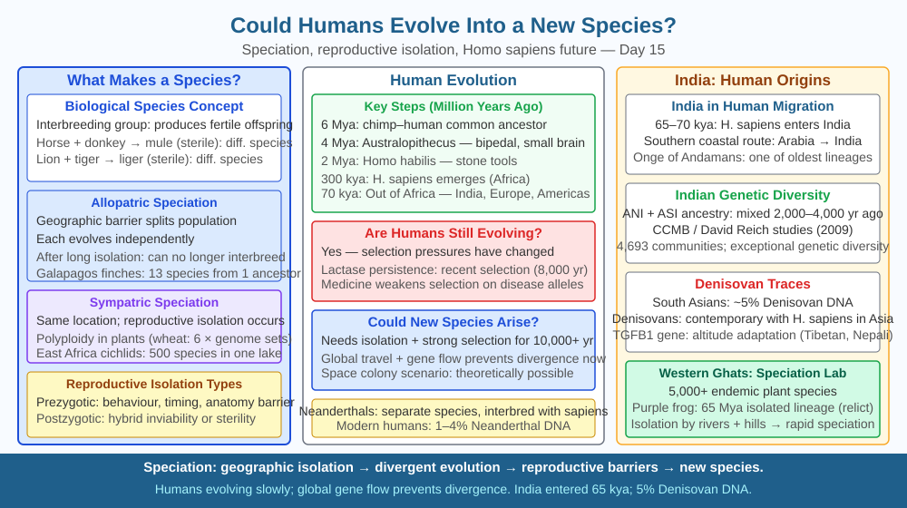

By the end of this lesson, you should be able to define a biological species, explain the role of reproductive isolation in speciation, and predict what would happen to two permanently isolated human populations over geological time.
Modern humans — Homo sapiens — share a common ancestor with chimpanzees that lived roughly 6–7 million years ago. From that one ancestral population, both humans and chimpanzees evolved into completely separate species that cannot interbreed today. Yet for most of human history, different human groups have continued to meet, trade, travel, and interbreed. Could humanity ever split into more than one species? Or does our globally connected world make that impossible? And what would it actually take?
To answer whether humans could evolve into a new species, we must first understand what a species is and how new ones form — a process called speciation.
The most widely used definition is the biological species concept (Ernst Mayr, 1942): a species is a group of organisms that can interbreed and produce fertile offspring, and that are reproductively isolated from other such groups. Two populations belong to different species when they can no longer exchange genes — that is, when gene flow between them stops.
How speciation happens: the mechanism
Speciation almost always begins with reproductive isolation — some barrier that prevents two populations from interbreeding. Isolation can be geographic (mountains, oceans, deserts separating populations — called allopatric speciation) or non-geographic (differences in breeding season, behaviour, or anatomy — called sympatric speciation). By far the most common route is allopatric speciation.
Once isolated, each population accumulates genetic changes independently through two processes:
1. Random mutations. DNA replication errors occur at a low but constant rate (approximately 1–2 × 10⁻⁸ per base pair per generation in humans). Over thousands of generations, each population accumulates a unique set of mutations in its genome. These mutations are different in the two populations because they arise randomly and independently.
2. Natural selection. If the two isolated populations face different environmental conditions — different climates, diseases, food sources — natural selection will favour different alleles in each. Over many generations, the allele frequencies in the two populations diverge further.
The result is that after sufficient time in isolation, the two populations become so genetically different that if they were brought back together, they could no longer successfully interbreed. Their chromosomes may have rearranged, their mating behaviours may differ, or hybrid embryos may be non-viable. At this point, speciation is complete.
How long does speciation take? It depends on generation time, mutation rate, population size, and selection pressure. For bacteria it can take hundreds of years. For fruit flies, laboratory experiments have produced reproductive isolation in as few as 30–50 generations. For humans, with a generation time of about 25–30 years, models suggest that complete reproductive isolation between two populations might take at least 500,000–1,000,000 years under natural selection — though this estimate depends heavily on the strength of selective pressures and degree of isolation.
Could this happen to humans today? The critical requirement is complete reproductive isolation — zero gene flow between populations. With modern transport, global communication, and migration, different human populations today continue to interbreed freely, which equalises allele frequencies across the species and prevents divergence. This is why all humans today belong to a single species despite having lived in different continents for tens of thousands of years.
A hypothetical scenario in which speciation could occur: if a group of humans were permanently isolated — on another planet, or on a deeply isolated island with no return — over hundreds of thousands of years, with different selection pressures acting on each group, the accumulated genetic differences could eventually produce reproductive incompatibility. This is speciation by the same mechanism that produced every distinct species on Earth.
Think of speciation as a river splitting into two channels separated by a sandbar:
Remove the sandbar (reconnect the populations), and the streams merge back; gene flow resumes and divergence slows or reverses. As long as the barrier exists, divergence continues until reproductive compatibility is lost.
The included SVG shows a timeline diagram:

Speciation is not a theoretical concept — it has concrete examples and applications:
Q3 established that permanent isolation of two human populations would lead to accumulating genetic differences and, eventually, speciation. Now extend further: suppose the two isolated populations were each subjected to very different selection pressures — one on a cold, high-altitude Mars colony, one remaining on tropical Earth.
Predict: Would speciation happen faster or slower under strong, differing selection pressures compared to populations in similar environments? Explain using the mechanism: how does the rate of allele frequency change in each population relate to the strength of natural selection, and how does this affect the speed of genetic divergence between the populations?
What condition is necessary for a new species to evolve from an existing one?
Correct answer: c
Why is understanding speciation mechanism more useful than just wondering if humans will change?
Correct answer: a
What would happen to speciation rate if two human populations were permanently isolated?
Correct answer: a
Explain today's concept to a younger student in 60 seconds without technical jargon. Then explain it again using the correct scientific vocabulary.
If both explanations describe the same mechanism, you have understood the concept rather than memorised it.
Homo sapiens interbred with at least two other hominin species before they went extinct — Neanderthals (Homo neanderthalensis) and Denisovans. DNA analysis shows that people of non-African descent carry approximately 1–4% Neanderthal DNA in their genomes today, and some South Asian and Oceanian populations carry Denisovan DNA. This means the speciation between Homo sapiens and these other hominins was not yet complete when they met — they were different enough to be classified as separate species, but still capable of producing fertile hybrid offspring. Speciation is a gradual process, not a sharp boundary.
A new species forms when reproductive isolation stops gene flow between two populations, allowing independent mutation accumulation and natural selection to diverge their genomes over many generations until interbreeding becomes impossible.